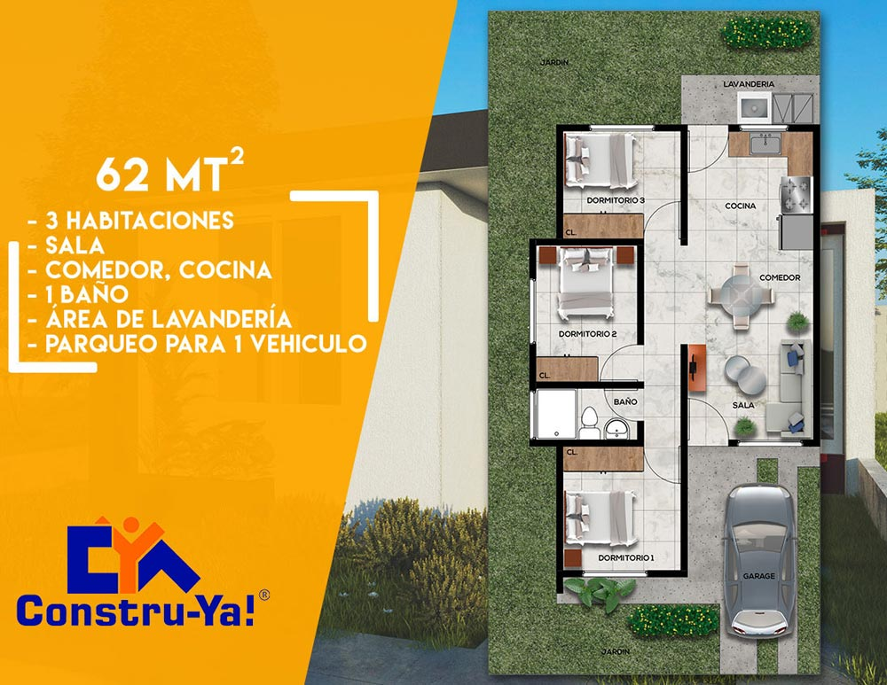

Productos y Servicios:
Vivienda Prioritaria:
Es un Programa con el cual fortalecemos el rol eminentemente social de nuestra promotora, que consiste en la Construcción en lote propio, de Unidades habitacionales que cumplen con los critérios de funcionabilidad, tamaño y precio, el cual está pensado para que pueda ser asequible a las familias guatemaltecas que tengan ingresos promedio por núcleo familiar de 2 Salarios mínimos.
Estas unidades habitacionales, pueden ser adquiridas por medio de un crédito Bancario, con una cuota mensual desde Q1,980.00.
Casa Joven:
Es un Programa para la población joven y económicamente activa, que consiste en la Construcción en Lote propio, de una Unidad Habitacional Básica y funcional, misma que se adquiere por medio de un crédito bancario y al cual se le aplica un subsidio de Q10,000.00 (Diez mil quetzales exactos) que se utilizan como enganche del inmueble a edificar.
Pueden Aplicar familias guatemaltecas que tengan ingresos promedio por núcleo familiar de 2 Salarios mínimos.
Casa Mujer Próspera:
Es un Programa que tiene por objetivo brindar una solución habitacional a las mujeres Solteras, jefas de hogar, madres solteras, viudas o divorciadas, que No tengan vivienda propia y estén comprendidas dentro de las edades de 25 a 50 años, así mismo que presenten ingresos familiares desde de 2 salarios mínimos.
Con este programa, contribuimos al buen vivir de las Guatemaltecas que deseen adquirir vivienda propia.
C. L P. (Construcción en Lote Própio)
Con el Programa CLP (Construcción en Lote Propio) las familias o personas Guatemaltecas que cuentan con un Lote Totalmente pagado, pueden construir su vivienda con financiamiento Bancario, optando a un Crédito hipotecario, con la tasa de interés que más se ajuste a su necesidad.
CUCHU-CASA
Cuchu-Casa es un programa que actúa como un típico juego de cuchubal Guatemalteco, en donde se reúne un determinado número de participantes, los cuales aportan una cuota mensual para la construcción en terreno propio, de una Vivienda Básica no mayor de Q150,000.00. Aquí no se necesita financiamiento bancario; sino que el aporte de cada participante es el capital económico, que mes a mes hacen un sueño realidad.
El cuchubal se termina cuando al final de un determinado tiempo, cada participante es beneficiado con una vivienda propia sin deuda y sin interés moratório.
